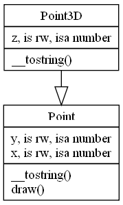

References
Functions
to_dot()
Returns a string in DOT format which contains a UML Class Diagram of loaded modules (classes&roles).
Utilities
coat2dot [--no-attr] [--no-meth] [--no-meta] [--note="message"] module1 [module2, ...]
Generates a UML Class Diagram of modules in DOT
(Graphviz) format.
See Also
The article On the Declarative Specification of Models by Diomidis Spinellis.Examples
$ coat2dot Point3D > Point3D.dot $ dot -T png -o Point3D.png Point3D.dot
$ cat Point3D.dot
digraph {
node [shape=record];
"Point"
[label="{\N|y, is rw, isa number\lx, is rw, isa number\l|__tostring()\ldraw()\l}"];
"Point3D"
[label="{\N|z, is rw, isa number\l|__tostring()\l}"];
"Point3D" -> "Point" // extends
[arrowhead = onormal, arrowtail = none, arrowsize = 2.0];
}
Point3D.png